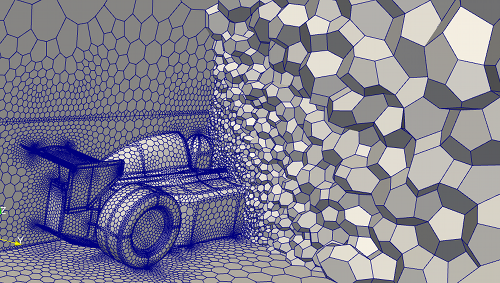
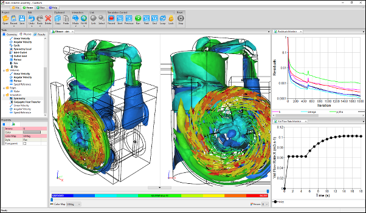
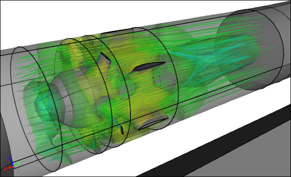

Computational Fluid Dynamics - CFD
What is Computational Fluid Dynamics?
Computational Fluid Dynamics, also known as CFD, is the digital equivalent of a real world wind tunnel or flow bench. With CFD you can simulate the air flow around a racing car, the water flow through a heating system, and a whole host of other applications wherever a gas and/or liquid (including multiphase) flows. From your CFD simulation you can determine flow quantities, e.g., lift, drag, pressure loss, velocity profiles, and pressure distributions, to help guide your design.
 CFD Simulation of an Unusual Drone Design
CFD Simulation of an Unusual Drone Design
In addition, CFD can also calculate the heat carried by a fluid (heat transfer), so you can simulate the natural convection of a heating system, or the forced convection of a computer cooling system. Temperature and heat flux from your CFD simulation can help determine whether your design can satisfy the task at hand.
 CFD Conjugate Heat Transfer for a Heat Exchanger
CFD Conjugate Heat Transfer for a Heat Exchanger
Industrial CFD typically solves the Reynolds-Averaged Navier-Stokes (RANS) equations in time-independent or time-dependent forms. In combination with a suitable turbulence model this approach has proved to be extremely successful in tackling a wide range of industrial fluid flow applications.
Why is Computational Fluid Dynamics Useful?
CFD is a timely and cost-effective alternative to physical flow testing. However, rather than competing with physical flow testing, CFD is often used in a complimentary role. For example, final design evaluation might rely on limited physical testing after an extensive CFD evaluation to reduce the number of prospective designs during the concept design phase of a project.
 CFD Simulation of a Racecar in a Wind Tunnel
CFD Simulation of a Racecar in a Wind Tunnel
Wind tunnels, and other forms of physical testing, often use scale models for flow analysis, which introduce Reynolds Number dependencies and the need for empirical correction factors in order to mimic full-scale results. In contrast CFD can simulate the air flow over a full-size car without the need for correction factors, using a full-size digital CAD model.
CFD can produce all the results you would expect of physical tests (e.g., lift, drag, and pressure loss) and in addition it also provides easy access to flow fields (e.g., velocity, pressure) on surfaces and within the bulk of the fluid for insightful 3D flow visualization.
 CFD Streamlines Around a Racecar
CFD Streamlines Around a Racecar
What Applications can Computational Fluid Dynamics Simulate?
Broadly speaking there are two main categories of applications.
External Flow
- Aerospace
- Automotive
- Building/Construction
- Wind Turbines
- Environmental
Internal Flow
- Heating, Ventilating, and Air Conditioning (HVAC)
- Turbomachinery
- Electronics Cooling
- Materials Processing
How to do Computational Fluid Dynamics?
CFD is a totally digital form of analysis. Starting with a CAD model you typically create a flow volume to represent the region the fluid occupies. The internal region where the fluid resides is discretized into what is typically called a mesh.
CFD Polyhedral Volume Mesh
Solver and turbulence model selection is typically dependent on your application and flow speed (e.g., incompressible flow). Next boundary conditions, material properties, and initial conditions are assigned.
CFD uses an iterative approach to reach a solution, so the simulation is 'run' until the difference (residuals) between one iteration and the next is within an acceptable tolerance, called a convergence criteria. While CFD can run on the largest and fastest supercomputers, it can also run well on a high-performance multiprocessor/multicore workstation/laptop.
CFD Simulation of a Dust Collector
Once a CFD simulation is complete, the results can be visualized in many different ways.
- Streamlines
- Iso-Surfaces
- Surface Contours
- Vectors
- Integral Monitors
- XY Plots
CFD Simulation Visualization of a Fan
Feedback
Questions? Ideas? Problems?